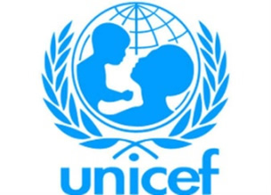
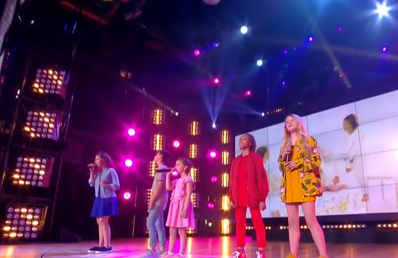
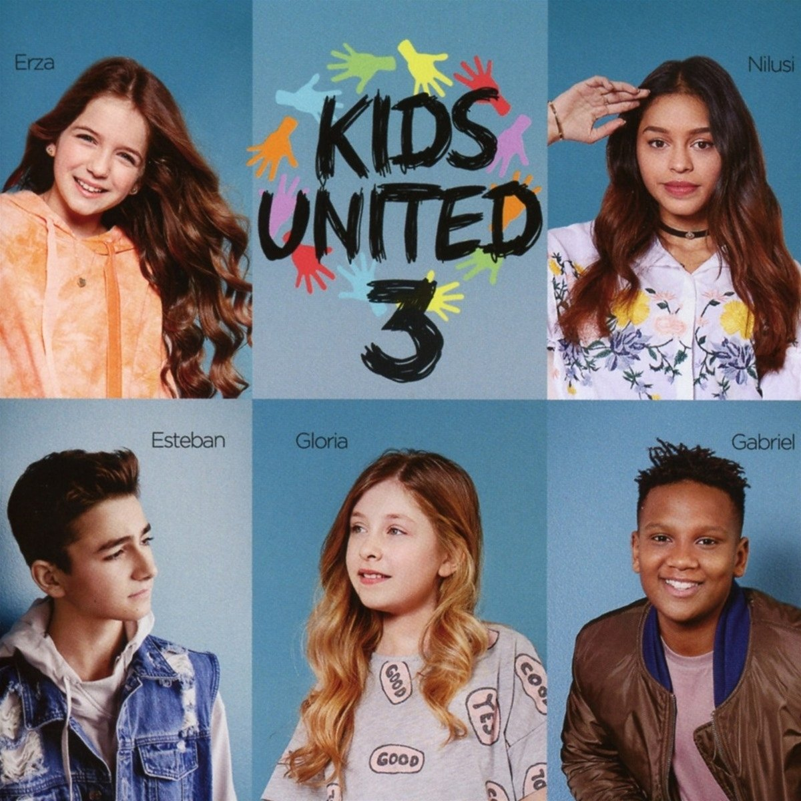
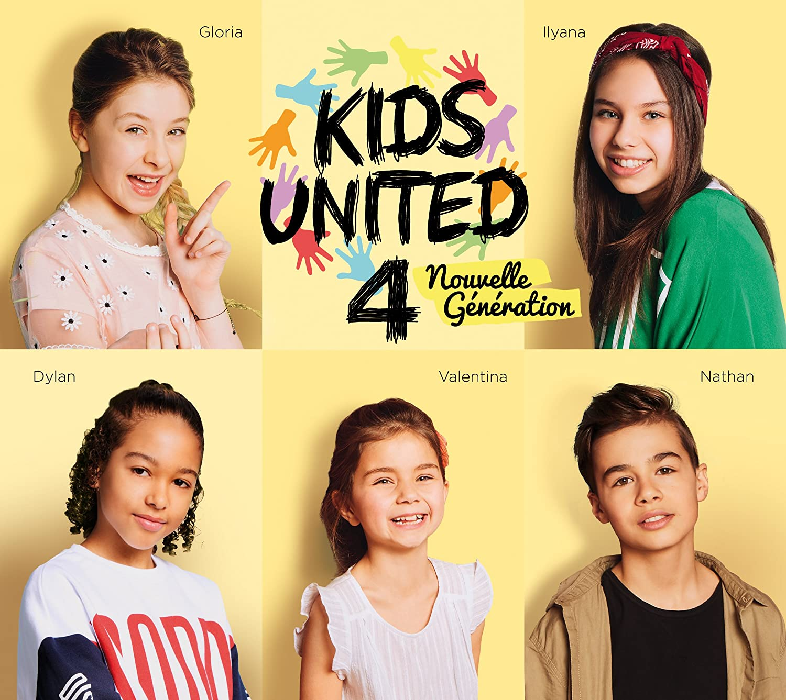

United Nations International Children's Emergency Fund
UNICEF, also known as the United Nations International Children's Emergency Fund ,is a United Nations agency responsible for providing humanitarian and developmental aid to children worldwide.The agency is among the most widespread and recognizable social welfare organizations in the world, with a presence in
192 countries and territories
. UNICEF's activities include providing immunizations and disease prevention, administering treatment for children and mothers with HIV, enhancing childhood and maternal nutrition, improving sanitation, promoting education, and providing emergency relief in response to disasters.
Kids United, succeeded by Kids United Nouvelle Generation (Kids United New Generation), is a French musical group consisting of five children born between 2000 and 2009 (six children when the group was originally formed). Erza Muqoli was a founding member. It was created to support UNICEF campaigns and is sponsored by Helene Segara and Corneille, two francophone singers. The group remains active and has achieved great success within Francophonic countries.
-
Un monde meilleur (A better world), 2015

Gloria Palermo de Blasi:
Born on April 27, 2007 (age 13) in Metz, Moselle, Lorraine. In 2014, she was a contestant in the first edition of The Voice Kids. She was teamed with Jennifer and lost to Carla in the semi-finals, past member of Kids United. She was the youngest member of the original Kids United group and was 8 when the group was created. Her mother is also a singer who, in 2017, auditioned in The Voice (French TV series) though unfortunately did not make it past the auditions. Gloria played Emilie in the musical Émilie Jolie and in December 2018 released her new single "Petit Papa Noël".
-
Tout le bonheur du monde (All the happiness in the world), 2016

Dylan Marina:
Dylan was born on July 22, 2004 (age 16). He was a contestant in Season 4 of The Voice Kids where he made it to the semi-final. He participated in the Kids United and Friends tour before joining Kids United, Nouvelle Generation. he was a part of the album Sardou et nous where he sang "La Java de Broadway" and "En Chantant" with Lou, Nemo Schifman and Angie Robba. Dylan's favourite singer is Beyonce.
-
Forever United, 2017

Ilyana Raho-Moussa
Ilyana was born on February 18, 2005 (age 15) in Le Havre. She was a contestant in Season 4 of The Voice Kids where she made it to the semi-final. She is a part of the album Sardou et nous: she sings Je vole with Nemo Schifman.
-
Au bout de nos rêves (At the end of our dreams), 2018

Nathan Laface: Nathan Laface, 14 (Born June 6, 2006) is Italian-Swiss and is from the Swiss city of Neuchâtel. He has dark brown hair, green eyes and plays football. He has a Facebook called "Nathan Laface Kids United" And a TikTok account.
-
L'hymne de la vie (The hymn of life), 2019

Valentina Tronel: Valentina was born on April 6, 2009 (age 11) in Brittany, France. She auditioned for The Voice Kids at the age of 6, with the song Tra te e il mare by Laura Pausini, though none of the judges selected her for their team. She is the youngest member of Kids United Nouvelle Génération. She also participated in The Tremplin 2018, and she represented France in the Junior Eurovision Song Contest 2020 with her first single "J'imagine". She went on to win the contest, giving France its first victory. Valentina's favourite artist is Ariana Grande.